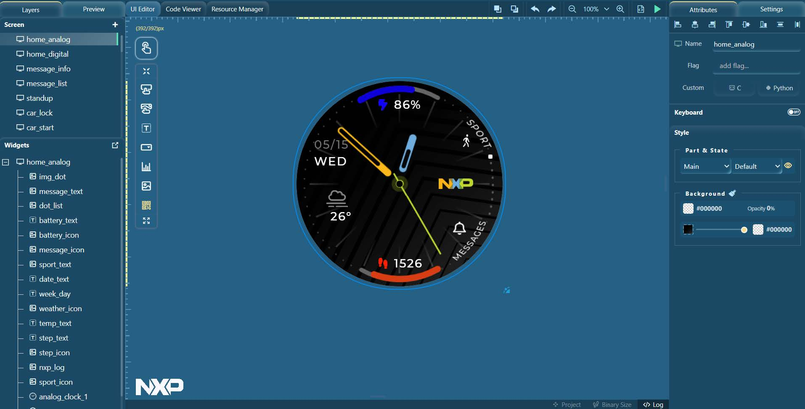

If you are unfamiliar with GUI Guider, we recommend reading on to get an overview of what this document has to offer. If you encounter any issues or have questions, feel free to visit our forum to communicate. We greatly value your suggestions as they are crucial to our ongoing improvement.
Updated text